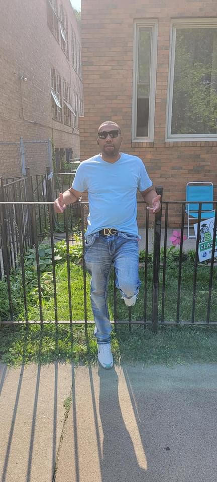
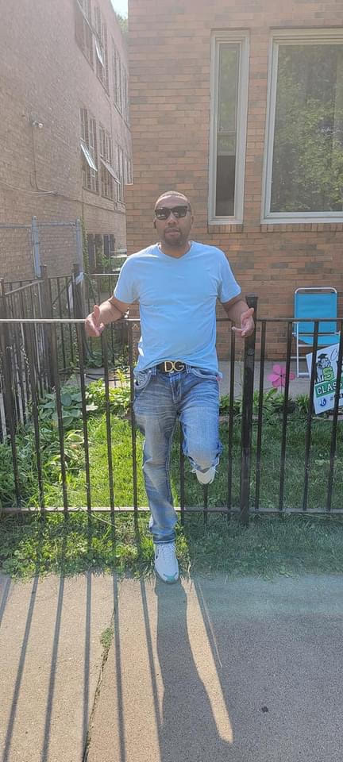

Choose your Style

The Bowl Cut
A bowl cut or mushroom cut is a simple haircut where the front hair is cut with a straight fringe (see bangs) and the rest of the hair is left longer, the same length all the way around, or else the sides and back are cut to the same short length.
The Hi-Top Fade
Hi-top fade is a haircut where hair on the sides is cut off or kept very short while hair on the top of the head is grown long.
The Classic Side-part
A regular haircut, in Western fashion, is a men's and boys' hairstyle that has hair long enough to comb on top, a defined or deconstructed side part, and a short, semi-short, medium, long, or extra long back and sides.The style is also known by other names including taper cut, regular taper cut, side-part and standard haircut; as well as short back and sides, business-man cut and professional cut, subject to varying national, regional, and local interpretations of the specific taper for the back and sides.
The Mohawk
The Mohawk (also referred to as a Mohican) is a hairstyle in which, in the most common variety, both sides of the head are shaven, leaving a strip of noticeably longer hair in the center. It is today worn as an emblem of non-conformity.
The Classic Fade
The taper fade combines a temple fade with a neck taper, leaving some hair in between. The difference between a taper and a low fade is that defined arch behind the ear. It's a cool and clean neckline for all types of hairstyles for Black men.
The Fohawk
The fohawk hairstyle has a long midline portion of hair but retains the hair at the sides of the head. Sometimes the side hair is just trimmed down a bit.The fohawk hairstyle has a long midline portion of hair but retains the hair at the sides of the head. Sometimes the side hair is just trimmed down a bit. Typically,worn by someone with afro-textured hair, with the crest generally standing up naturally.